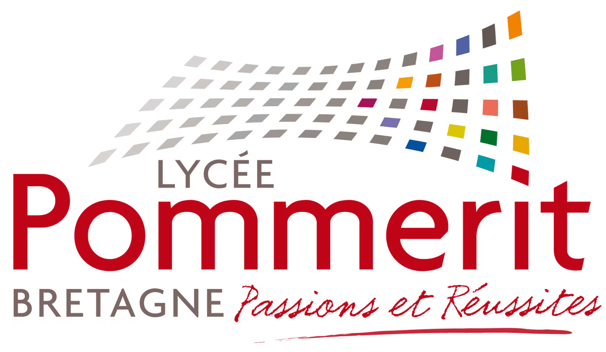

Lycée Pommerit
Comprendre le rôle de l'eau dans le fonctionnement des végétaux et tester ses connaissances grâce à une activité interactive.
Accéder à l'activitéNouvelle activité interactive sur la nutrition hydrique des végétaux.
Accéder à l'activitéComprendre l'influence du potentiel osmotique sur l'absorption de l'eau par les végétaux.
Accéder à l'activitéÉvaluer l'état structural d'un sol et diagnostiquer les risques de tassement.
Accéder à l'activitéRéalisation de tests de laboratoire (effervescence calcaire et réactivité) sur les échantillons de sol.
Accéder à l'activitéDétermination de la texture d'un sol à l'aide de la méthode GEPPA.
Accéder à l'activitéComprendre les mécanismes de la photosynthèse grâce à une application pédagogique interactive.
Accéder à l'activitéActivité en préparation.
Bientôt disponibleActivité en préparation.
Bientôt disponibleActivité en préparation.
Bientôt disponibleActivité en préparation.
Bientôt disponibleQCM, jeux pédagogiques et entraînements.
Bientôt disponible